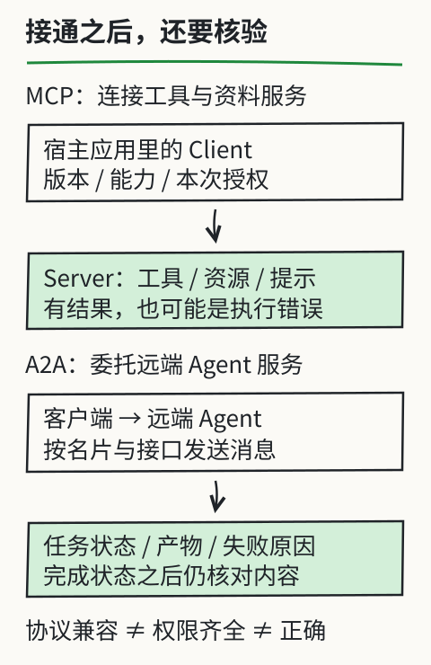

AI Agent 协议原理：MCP 与 A2A
模型提出“查单价”，应用如何找到工具并拿到结果？应用把任务交给另一个服务，又如何知道它完成还是失败？MCP 与 A2A 约定其中的消息和生命周期，不自动提供正确答案或执行权限。本章用 MCP 2025-06-18 与 A2A 0.3.0 作固定版本示例，接入新版本时应重新核对字段。
0. 协议定义
协议约定参与者如何交换消息、解释字段和处理状态。接口通了，只说明可以按约定通信，后续还要检查权限、业务结果与内容。
0.1 需要协议的原理
同一请求若一边传“数量”、另一边只认 quantity，双方就可能无法协作。除了字段，还需约定请求标识、版本、能力、超时与错误的表达方式。
0.2 计算机中常见的协议
HTTP 约定 Web 请求与响应，TLS 提供传输保护，DNS 解析域名，SMTP 传递邮件。它们分工不同：使用 HTTPS 不代表服务内容真实，通信成功也不代表业务成功。
0.3 协议的价值
共同的约定可以减少重复适配，但版本、可选能力、身份与具体语义仍可能不兼容。互操作要通过双方实际支持的行为来验证。
0.4 AI Agent 也需要协议
简单任务可以只在应用内部调用本地函数。连接多个外部工具或委托远端任务时，标准协议有助于复用已有接口；并非每个 Agent 都必须同时使用 MCP 和 A2A。
1. Agent 协议的层次
| 机制 | 约定或解决的问题 | 不能由此推断 |
|---|---|---|
| 模型工具调用格式 | 模型输出工具名、参数及调用标识等 | 函数已经执行 |
| MCP | 宿主应用连接提供工具、资源、提示的服务 | 模型获得了任意资源权限 |
| A2A | 客户端与远端 Agent 服务交换消息、任务状态与产物 | 任务成功、结果正确 |
这不是必须从第一层升级到第三层的能力等级。模型原生工具请求与 MCP 消息也不必采用相同格式，通常由应用适配。
2. MCP (Model Context Protocol)
先认清通信参与者，再看一条请求怎样走完。
2.1 协议基本信息
MCP 全称 Model Context Protocol，由 Anthropic 在 2024 年发布。规范和 SDK 由 官方项目维护；本章固定阅读2025-06-18 规范。许可证应以使用的仓库和资产为准，不替所有服务作统一许可承诺。
2.2 发布的背景
应用原先需要分别适配文件、数据库和 API；共同协议可以复用部分连接逻辑。服务依然需要实现自己的业务、身份与错误处理，“写一次”不等于所有客户端和所有能力无需配置即可使用。
2.3 MCP 是什么
| 服务端能力 | 内容 | 控制边界 |
|---|---|---|
| Tools | 有参数约定的可调用操作 | 应用按授权与条件执行 |
| Resources | 可列举或读取的数据资源 | 服务和应用限制访问范围 |
| Prompts | 可发现、取用的提示模板 | 模板仍需按本次任务使用 |
另外还有客户端能力与协议生命周期；上表不是协议的全部功能。资源和工具返回的数据可能含有不可信指令，连接成功不会自动解除这一问题。
2.4 MCP 的内部实现
宿主 Host 是运行模型交互的应用；内部的 Client 各自维护与 Server 的连接。Server 可以在本地进程，也可以位于远端。
初始化协商协议版本和能力→完成初始化通知→发现工具（如 tools/list）→宿主核验本次请求→调用工具（tools/call）→按标识接收结果。MCP 使用 JSON-RPC 2.0 消息，传输方式与生命周期按所选版本核对。
区分协议错误与工具执行错误：请求失败可能返回协议错误；工具正常返回一个带 isError 的结果时，也不能按成功完成汇报。拿到 HTTP 200、有效 JSON 或工具名称，都不足以证明查价成功。
2.5 类比理解：USB-C 接口
USB-C 的比喻只帮助理解“接口有共同约定”。它不能说明工具一定兼容、安全或可用，连接器也不会替应用决定应开放哪些动作。
2.6 MCP 的典型应用场景
文件读取、数据库查询与外部 API 都可以封装为 MCP 服务。先检查具体实现开放了什么、凭据属于谁、路径或查询范围如何限制，以及结果怎样保留出处。课程本地工具实验不依赖 MCP 服务。
3. A2A (Agent-to-Agent Protocol)
委托一个远端 Agent 时，关心的单位可以是一项有状态的任务，而非单次函数返回。
3.1 协议基本信息
A2A 全称 Agent2Agent，由 Google 在 2025 年发起，现查看 A2A 项目与官方文档。本章固定在 v0.3.0 规范的概念范围；旧 google/A2A 地址不是当前维护位置。
3.2 发布的背景
不同框架的 Agent 服务可以不公开内部提示或计划，仍通过约定的消息委托任务、汇报状态并返回产物。增加协作者也会增加延迟、权限边界与错误传播，不自动提高质量。
3.3 A2A 是什么
Agent Card 描述服务接口、能力与安全要求；Message 携带交互内容；Task 跟踪工作状态；Artifact 是产生的结果或文件。名片是能力声明，产物存在也不等于内容验收通过。
3.4 A2A 的内部实现
A2A 同样可以采用客户端—服务端交互，不应一概称为对等网络。0.3.0 包含 JSON-RPC、HTTP+JSON 与 gRPC 绑定，双方按所用绑定通信。
发送消息后可能得到消息或任务；任务可能处于 submitted、working、input-required 或 auth-required 等状态，也可能以 completed、failed、canceled 或 rejected 等结束。等待补充输入不等于完成，取消请求也不保证过去的动作已撤销。
人工追踪：客户端委托“核对通知有效版本”→服务返回 task-1、working→要求补原通知时为 input-required→补齐后返回报告和 completed。客户端最后仍要检查报告证据；若返回 failed，就保留失败原因，不画成功勾。本例是纸上流程，没有启动远端 Agent。
3.5 类比理解：企业微信
“工单”比聊天记录更便于追踪本例：先有委托与标识，再有状态变化和结果。实际实现还需处理认证、重连与产物获取，不能只发一句自然语言后假定所有同事已分工执行。
3.6 A2A 的典型应用场景
可考察报告整理、数据分析或业务委托。先定义每个服务交付什么、谁验收和何时停止，再决定是否值得引入多 Agent。这里列的是可能场景，没有声称某个产品已在这些任务上测得成功。
4. MCP vs A2A：对比与关系
两者可以在同一系统中出现，选哪个取决于需要互通的对象。
4.1 核心差异
| 维度 | MCP（本章固定版本） | A2A（本章固定版本） |
|---|---|---|
| 主要接口 | 宿主内的客户端连接工具/资料服务 | 客户端连接远端 Agent 服务 |
| 交互内容 | 工具、资源、提示及协议能力 | 消息、任务、状态与产物 |
| 不能替代 | 授权、业务校验、输出核验 | 委托边界、产物核验、失败恢复 |

4.2 两者的关系
一个远端 Agent 可以在内部调用 MCP 工具服务，客户端也可以直接调用工具。协议的组合不能由一张图证明已经实现；要实际检查版本、能力与调用记录。
4.3 选择的方法
工具仅供一个应用内部使用时，直接函数调用可能足够；需要复用 MCP 服务时再适配 MCP；确实要委托独立 Agent 服务时再评估 A2A。第三方 API 并非必须通过 MCP，多 Agent 系统也并非只有 A2A 一条路径。
5. 协议的未来趋势
将路线图与已经发布、实际支持的能力分开记录。
5.1 生态发展
生态会变化，维护文档要记下服务名称、版本、支持的传输与能力、凭据要求及核验日期。不沿用“截至 2025 年初”或“刚发布”的状态描述，也不把可安装当作已验证。
5.2 标准化进程
规范和 SDK 仍在演进。本章固定历史版本便于复查，未声称它们是最新版本；升级时比较字段、方法、状态与兼容性，而不是仅替换年份。
6. 小结
先到 L10区分请求、执行与回执，再回答：初始化成功、收到工具结果、收到 completed 各自能证明什么？还需检查哪些权限、原文或产物？
实际练习模型仍为 DeepSeek V4.1 Flash 与 Kimi K3。是否能在某个客户端连接某种协议，应检查该客户端和模型配置，不能只凭模型名字推断；本章没有相应接入实测。
参考资料
- MCP 2025-06-18 规范与 官方仓库。
- A2A v0.3.0 规范与版本记录。
- 课程本地工具实验：固定人工材料与实际本地计算，不冒充协议接入或模型自主规划。